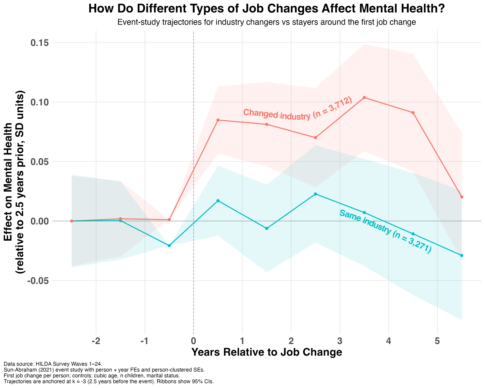

A few weeks ago, I shared some findings from the HILDA panel on how career transitions shape mental health. One of the more interesting results was that mental health declined in the years leading up to a voluntary job change, but rebounded sharply once the change happened.
A few people asked a good follow-up question: does the kind of job change matter? Is it different if you move to a similar role versus jumping into something completely new?
To answer this question, I ran a follow-up analysis. Using the 24 years of data from the HILDA panel (around 17,000 Australians per wave), I identified everyone who reported a voluntary job change (excluding anyone who was fired or made redundant in the same year). I then split them into two groups based on whether they stayed in the same industry or moved to a new one. For each group, the analysis tracked their mental health from 3 years before the job change to 5 years after, comparing them to people who didn't change jobs over the same period.

The findings:
1) The mental health boost following a job change is almost entirely driven by people who changed industries. For people who stayed in the same industry, the change was minimal.
2) The boost following an industry change persists for several years. Industry switchers were still above baseline three to four years after the change. But there are signs that by year five, mental health begins drifting back toward where it started.
A couple of caveats worth flagging. This isn't causal. People who choose to change industries may differ from those who don't in ways that also affect mental health. The boost may reflect people exiting industries that are a poor fit, in which case someone already happy in their role wouldn't expect to see the same benefit.
Also the post-change part of the trajectory is based on the smaller subset of people who stay in the same job for that long. The mental health estimate can be inflated if those with poorer mental health exit the industry sooner (though this likely applies to non-switchers too).
Still, the pattern suggests that for those dissatisfied with their current industry, a change might have a positive effect on wellbeing.